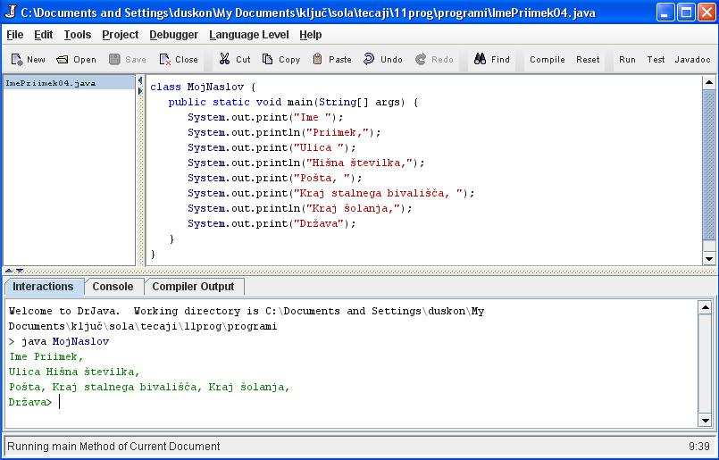

METODA ZA IZPISOVANJE REZULTATOV NA ZASLON
- Java premore posebno metodo za izpisovanje nizov na zaslon.
- Obstojata dve možnosti metode za izpis na zaslon:
- System.out.print(argument);
- System.out.println(argument);
- V okolju drjava zapiši program, ki ga vidiš na sliki.
- Program shrani tako kot vidiš na sliki. Uporabi svoje ime in priimek.
- Program prevedi.
- Program poženi.
- Program spremeni tako, da napišeš namesto zadnje vrstice System.out.print("Država"); ukaz System.out.println("Država");
VAJA 4:
- V okolju za pisanje izvorne kode v jeziku Java, za prevajanje in za interaktivno delo zapiši zgornji program "MojNaslov". Sledi navodilom na slikah.
- Kodo lahko tudi kopiraš iz te datoteke in jo prilepiš v okolje, v katerem pišeš programèke. Pozor: koda, ki jo boš kopiral/a, vsebuje eno, dve, tri ali štiri napake. Èe želiš, da bo program deloval, moraš napake odkriti in jih odpraviti.
- Izvorno kodo shrani pod imenom "ImePriimek04.java". ImePriimek je seveda tvoje lastno ime in priimek.
- Datoteko "ImePriimek04.java" prevedi.
- Prevedeno datoteko zaženi, preveri rezultat v interaktivnem oknu in poklièi profesorja, da vidi rezultat.
1. Vprašanja:
1. Kateri dve metodi imamo v Javi na razpolago za izpis rezultatov na zaslonu? Zapiši ju v zvezek.
2. V èem se ti dve metodi med seboj razlikujeta?
3. Zakaj sta v zgledu na sliki Ime in Priimek zapisana v isti vrstici?
4. Zakaj je v zgledu na sliki Ulica izpisana v novi vrstici?
5. Zakaj v zgledu na sliki Pošta ni izpisana v isti vrstici kot Hišna številka?
6. Zakaj sta v zgledu na sliki Kraj stalnega bivališèa in Kraj šolanja izpisana v isti vrstici kot Pošta?
7. Kaj se spremeni v interaktivnem oknu, èe zadnjo vrstico programa na sliki System.out.print("Država"); spremenimo v System.out.println("Država");
8. Kakšen naslov smo dali razredu, ki smo ga izdelali v tej uèni enoti?
9. Katerega tipa je spremenljivka, ki je argument razreda "main" v tej uèni enoti?
2. Zapiši od ene do pet kljuènih besed, ki povzemajo vsebino te uène enote.
3. Povezave do dodatnih informacij.
Gradiva na spletnih straneh fakultete za matematiko in fiziko v Ljubljani.
Spletni priroènik proizvajalca programskega okolja Java. To je podjetje Sun.
|